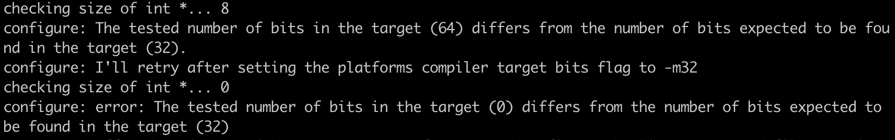

Compiler JDK
JDK Supported Build Platforms
|

|
Compile JDK
Install Boot JDK
To compile JDK 22, your Boot JDK version must be either 20, 21, or 22.
sdk i java 20.0.2-openGet the complete source code:
当前 仓库源码 JDK version 为 22。
git clone https://git.openjdk.org/jdk/ openjdk